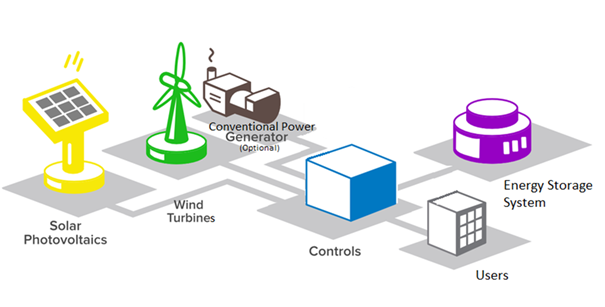

Microgrids
Microgrids are small-scale electrical networks designed to provide reliable power to a small number of consumers.
They combine local production resources (diesel generators, photovoltaic panels, mini wind turbines), consumption sites, storage devices and demand management and supervision tools.

They can be directly connected to a distribution grid, or operate independently of the grid in "islanding" mode.
Deploying a microgrid has a number of objectives: to provide sustainable electricity to so-called non-interconnected areas such as islands, which are not (or only marginally) connected to national grids; to ensure the security of energy supply in areas where the grid is fragile and often unreliable; to facilitate the integration of renewable energies: microgrid energy management systems smooth consumption and regulate the intermittency of renewable energies.